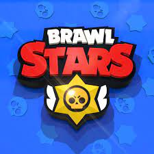
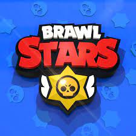
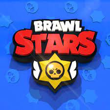
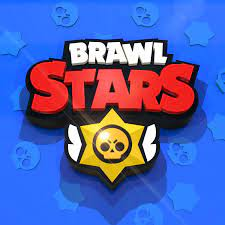

⠀⠀

⠀⠀


O jogo conhecido como Clash Royale é um videojogo de estratégia Também conhecido como o melhor jogo manual do mundo, desenvolvido e publicado pela SuperCell
O jogo foi lançado em Canadá, Hong Kong, Austrália, Suécia, Noruega, Dinamarca, Islândia, Finlândia, Nova Zelândia, Brasil, Estados Unidos, Reino Unido e muitos outros países para os dispositivos iOS em 4 de janeiro de 2016. O jogo foi lançado para Android para os mesmos países acima mencionados em 16 de fevereiro de 2016. Ambas as plataformas receberam o lançamento mundial do jogo em 2 de março de 2016.
Clash Royale consiste em um jogo de estratégia no qual se lutará contra um adversário aleatório. O objetivo é destruir as torres inimigas usando cartas que poderão ser desbloqueadas ao longo do tempo. Algumas delas são trazidas de outro jogo da Supercell: Clash of Clans. Cada carta durante uma partida possui um preço de elixir, um recurso utilizado durante partidas, sendo acumulado ao longo do tempo a servir de energia para posicionar no campo de batalha as cartas selecionadas em menu; outrossim há a opção de jogar contra um amigo, jogar alguns modos, havendo-lhes um aliado a ajudar a aniquilar as torres do oponente. Clash Royale também possui um sistema de clãs, sentes grupos a que pessoas se juntam para conversar e jogarem juntos. Cada um pode criar o próprio clã, ao custo de 1000 moedas do game, e você pode personalizá-lo a gosto, tanto como o escudo do seu clã, seu Lema, seu requisito e a sua região.
/i.s3.glbimg.com/v1/AUTH_59edd422c0c84a879bd37670ae4f538a/internal_photos/bs/2016/3/w/okwpplTSGvAy1f9NPYHQ/google-clash-royale.jpg)

 ⠀⠀

⠀⠀
